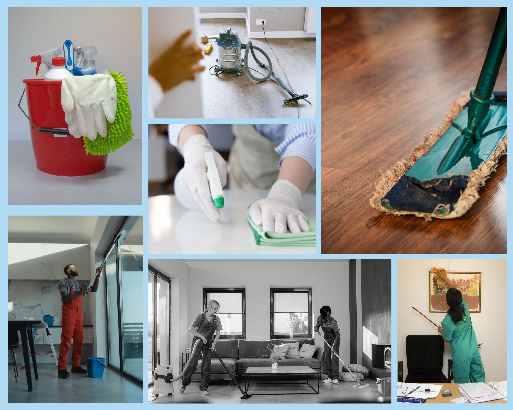

Detalles de los servicios
Nuestro servicio es ofrecer una limpieza profesional, para limpiar y mantener espacios residenciales, comerciales o industriales. Contamos con personas que tienen la experiencia, el equipo y los suministros necesarios para limpiar y desinfectar de manera efectiva varios entornos.
Lista de servicios
Final de obras
Casas residenciales
Oficinas
Final de eventos/salones
Pequeñas empresas
Servicio pre/post mudanzas

Limpieza comercial: Esta abarca la limpieza y el mantenimiento de oficinas, tiendas minoristas, hoteles, restaurantes y otros establecimientos comerciales. A menudo involucra espacios más grandes y puede incluir tareas como limpieza de pisos, limpieza de ventanas, saneamiento de baños y orden general.
Limpieza industrial: Se centra en la limpieza y el mantenimiento de instalaciones industriales, almacenes, plantas de fabricación y otros entornos a gran escala. Implica métodos de limpieza especializados, como lavado a presión, limpieza de equipos y manejo de materiales peligrosos.
Limpieza profunda: Una limpieza más profunda e intensiva que se enfoca en áreas difíciles de alcanzar, manchas y suciedad acumulada. A menudo incluye tareas como restregar lechada, limpiar aparatos y limpieza detallada de todas las superficies.
Limpieza de ventanas: limpieza y lavado de ventanas, tanto interiores como exteriores, para eliminar rayas, suciedad y mugre.
Limpieza de alfombras y tapicería: Métodos de limpieza especializados para alfombras, tapetes y tapicería para eliminar manchas, olores y alérgenos.
Limpieza posterior a la construcción: Servicios de limpieza brindados después de proyectos de construcción o renovación para eliminar escombros, polvo y residuos de construcción.
Limpieza especializada: servicios adaptados a necesidades específicas, como limpieza de instalaciones médicas, encerado de pisos, limpieza de eventos y más.
Brindamos un servicio sólido y confiable
Tipos de servicios de limpieza que ofrecemos:
Limpieza residencial: Esta implica la limpieza y el mantenimiento de casas, apartamentos u otras propiedades residenciales. Puede incluir tareas como quitar el polvo, pasar la aspiradora, trapear pisos, limpiar baños y cocinas.Limpieza comercial: Esta abarca la limpieza y el mantenimiento de oficinas, tiendas minoristas, hoteles, restaurantes y otros establecimientos comerciales. A menudo involucra espacios más grandes y puede incluir tareas como limpieza de pisos, limpieza de ventanas, saneamiento de baños y orden general.
Limpieza industrial: Se centra en la limpieza y el mantenimiento de instalaciones industriales, almacenes, plantas de fabricación y otros entornos a gran escala. Implica métodos de limpieza especializados, como lavado a presión, limpieza de equipos y manejo de materiales peligrosos.
Nuestros servicios ofrecidos:
Limpieza general: Esta implica tareas de limpieza de rutina como quitar el polvo, aspirar, barrer, trapear y desinfectar superficies.Limpieza profunda: Una limpieza más profunda e intensiva que se enfoca en áreas difíciles de alcanzar, manchas y suciedad acumulada. A menudo incluye tareas como restregar lechada, limpiar aparatos y limpieza detallada de todas las superficies.
Limpieza de ventanas: limpieza y lavado de ventanas, tanto interiores como exteriores, para eliminar rayas, suciedad y mugre.
Limpieza de alfombras y tapicería: Métodos de limpieza especializados para alfombras, tapetes y tapicería para eliminar manchas, olores y alérgenos.
Limpieza posterior a la construcción: Servicios de limpieza brindados después de proyectos de construcción o renovación para eliminar escombros, polvo y residuos de construcción.
Limpieza especializada: servicios adaptados a necesidades específicas, como limpieza de instalaciones médicas, encerado de pisos, limpieza de eventos y más.